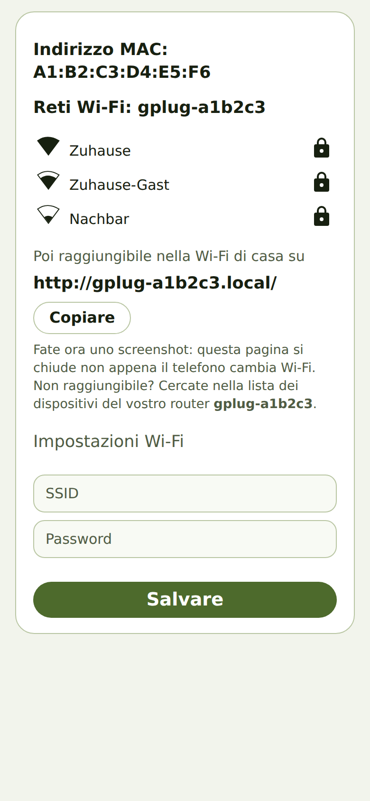
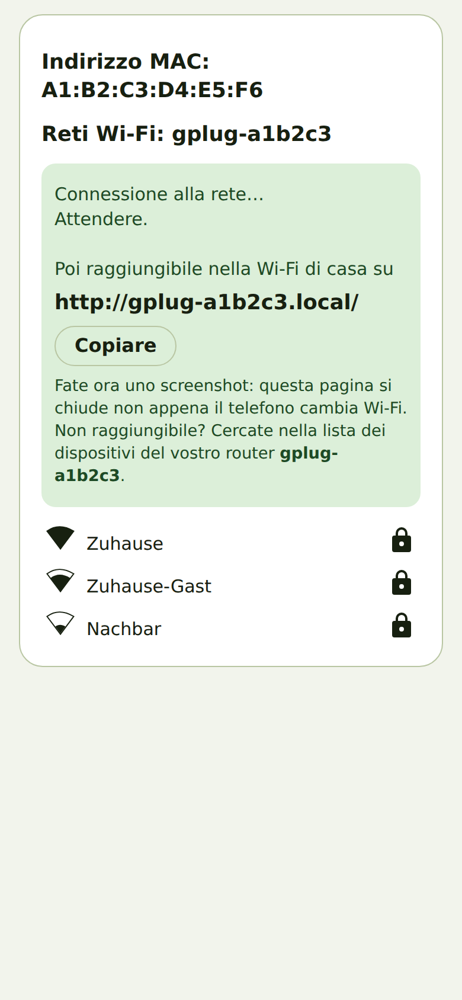

Collegare il gPlug al Wi-Fi
Di cosa si tratta
Come nuovo proprietario di un gPlug voglio collegarlo al Wi-Fi di casa per poter aprire la sua app nel browser.
Come fare
- Inserite il gPlug nell'interfaccia cliente del contatore. Finché non conosce nessun Wi-Fi, apre
una propria rete chiamata
gPlug-Setup. - Collegate il telefono a
gPlug-Setup. Il telefono apre da solo la pagina di configurazione; se non lo fa, apritehttp://192.168.4.1/nel browser. - Toccate la vostra rete di casa nell'elenco e inserite la password sotto Impostazioni Wi-Fi.

Pagina di configurazione con le reti trovate - Annotate l'indirizzo sotto Poi raggiungibile nella Wi-Fi di casa su – oppure toccate Copiare. Ha la forma
http://gplug-xxxxxx.local/. - Toccate Salvare. Fate ora uno screenshot: la pagina si chiude non appena il telefono torna al
Wi-Fi di casa.

Dopo il salvataggio: il futuro indirizzo del gPlug - Ricollegate il telefono al Wi-Fi di casa e aprite l'indirizzo annotato.
Come capire che ha funzionato
- L'indirizzo annotato mostra la procedura di configurazione del gPlug.
- La rete
gPlug-Setupscompare poco dopo.
Note
- La pagina di configurazione segue la lingua del telefono.
- Se l'indirizzo non si apre, cercate il gPlug nell'elenco dei dispositivi del router con il suo nome
gplug-xxxxxxe aprite il suo indirizzo IP.
Verificato con il simulatore del dispositivo il 30 settembre 2026. Verificato su hardware reale: gPlugK 2026-09-16 (Android).